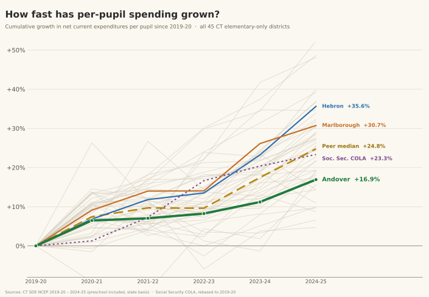

Andover's First Selectman has sent another mailer, urging a NO vote on the June 16 school budget and calling it unsustainable. On that one word, the town's own record says the opposite.
Andover's First Selectman has sent another mailer, this one urging a NO vote on the June 16 school budget. It is more careful than the last. The arithmetic is gone, and that is to its credit. But the whole case now rests on a single word, "unsustainable," and on that word the town's own data says the opposite.
The mailer's core claim is that "annual budget figures of 6%" cannot be sustained over the long term. So look at the long term. Connecticut publishes Net Current Expenditures Per Pupil for every district, every year. Here is how Andover's compares against all 45 elementary-only districts in the state over the last five years.

Over the five years from 2019-20 to 2024-25, Andover raised its per-pupil spending by 16.9 percent. The typical comparable district raised its by 24.8 percent. Andover grew slower than 35 of the 44 other districts in the group, and slower than the cost of living itself: a retiree's Social Security benefits rose 23.3 percent over the same period, while Andover's school came in well under that.
A budget that has grown more slowly than the benefits our fixed-income neighbors live on, and more slowly than all but nine of its peer districts, is not the definition of unsustainable. It is the definition of restraint. The one year the mailer points to does not make a trend. The trend is the line at the bottom of that chart.
Social Security's cost-of-living adjustment is built to track general inflation, so plotting both would add a line without adding information. For the record, the Consumer Price Index rose 23.1 percent over these same five years, essentially the same as the COLA.
The chart ends at 2024-25 because that is the most recent year the state has published. Connecticut released the 2024-25 per-pupil figures in October 2025, and the 2025-26 figures are expected in the fall of 2026.
The mailer asks voters to react to a 6 percent figure. That number is the Andover Elementary School budget alone, one of several pieces on the ballot.
Here is the whole picture, from the town's own proposed budget:
The RHAM assessment rises 0.4 percent. The town side rises 3.5 percent. Put it all together and the total Andover budget rises 3.4 percent, and the estimated tax rate goes up three-tenths of one percent. The 6 percent that the mailer leads with is real, but it is not what anyone pays. The number being used to alarm you is not the number on your tax bill.
The mailer treats the school's plan to draw on its reserve as a sign of trouble. Reserves, it says, should be for emergencies, not for operating costs.
That has the account backwards. Connecticut authorizes school districts to keep a nonlapsing account (Conn. Gen. Stat. Section 10-248a) for exactly this purpose: to manage the gap between a year's budget and its actual costs without scrambling for a supplemental appropriation or rushing to spend down a surplus before June 30. A board may add up to 2 percent of its appropriation to that account each year. Andover's balance, $346,709 at the last audit, is the accumulated product of years of the district finishing under budget and banking the difference. The reserve exists because the school has been frugal, not because it has been loose.
What is being drawn from it now, roughly $97,500, is there to absorb a specific cut. Last year the Board of Finance reduced the school budget by $160,000. The school still had teaching positions it was committed to filling, and covering the resulting gap from the reserve was the understood way to make the year balance. That is not a board losing control of its finances. It is a board spending, on purpose, money it saved on purpose, from an account the state created for precisely this situation. After the draw, the account still holds roughly a quarter of a million dollars.
And the school is not doing anything the town itself does not do routinely. The town's own proposed budget plans to draw $100,000 from its general fund balance next year, after drawing $190,000 this year and $150,000 the year before. These are different accounts, the school's nonlapsing fund and the town's fund balance, but they work the same way and exist for the same reason. Using a reserve to balance a budget is ordinary practice in Andover, not a warning sign.
The mailer says the Board of Education rejected the Board of Finance's request to bring the increase down to 7.5 percent "without a public meeting, discussion, or vote." The first part is accurate. The implication, that something was decided in the dark, is not.
The Board of Education had already taken its position, in public. In an open meeting, the board had directed its chair to hold the proposed budget rather than accept further reductions until voters had a chance to weigh in at referendum. So when the Board of Finance's 7.5 percent suggestion came through, there was no new decision to make and nothing to vote on again. The chair was carrying out a directive the board had given in the open. The absence of a fresh vote was not secrecy. It was a position already on the record.
It is worth recalling what kind of request that was. As a companion piece on this site lays out, Connecticut statute and the town charter both give the Board of Finance control over the total dollars appropriated to the school, but on the school budget itself the charter says it "may only comment and make recommendations." A request to cut to 7.5 percent is exactly that, a recommendation, one the Board of Education was entitled to weigh and to decline.
The mailer suggests that the latest proposal, lower than the two before it, looks less like a careful review than like the board hunting for a number voters will accept.
In one sense that is fair, and worth saying plainly. The budget did come down, and then come down again, to reach a figure the town would approve. But that is not a confession. It is the process working as designed. The Board of Finance sets the total it believes the town should spend, voters render a verdict at referendum, and the number moves until it matches what the community will support. Arriving at a total the town will pass is the entire point of putting it to a vote.
The question the mailer steps around is not whether the number came down. It is who decides where it comes down from. On that, the law is not ambiguous. As shown elsewhere on this site, the Board of Finance controls the total dollars appropriated to the school. It does not control the line items. Which positions and programs to fund within that total is the Board of Education's call.
So when the mailer faults the school for not cutting where the Board of Finance pointed, it is asking for something the charter does not allow. A recommendation the Board of Education is free to weigh and decline is the only kind the charter permits. To recast that recommendation as a directive the board defied is to ask the Board of Finance to do by suggestion what it cannot do by vote: set the school's spending line by line. Setting the total is the Finance board's authority, and a real one. Deciding what to cut to meet it belongs to the school.
A NO vote does not produce new scrutiny. The scrutiny already happened.
The Board of Finance held public meetings on this budget. The Board of Education published its packets. The audited financial statements are public. The First Selectman, as we explain below, sat in those rooms with standing to question every line. The boards heard the objections, weighed them, reduced the budget twice, and produced what is on the ballot.
A NO vote does not reopen that process. It schedules another referendum, a few weeks later, on essentially the same budget, and asks the rest of us to pay for running it.
The mailer is signed by Jeffrey Maguire, and it does not mention that he is Andover's First Selectman. Under the town charter he is an ex officio member of every board, including Finance and Education. He was in the room as this budget was built, with standing to ask questions, request data, and weigh in at every stage. He did. The boards considered his objections and produced this budget anyway.
The mailer is addressed to "Andover Taxpayers." It is not from the town. It is a privately funded appeal from the town's chief elected official, asking voters to overturn the work of the boards he sits on, and its printed disclosure identifies him only by name, with the surname misspelled "Jeffery," and with no mention of the office he holds.
Andover Town Hall · 17 School Road
Polls open 6:00 AM – 8:00 PM
Town of Andover FY 2026-27 Proposed Budget (as of 5/27/26). Source of the figures used here: AES at $4,839,390 (+6.0%, +$273,928), RHAM at $4,153,318 (+0.4%), total Andover budget +3.4%, estimated mill rate +0.30%, ECS at $2,084,974, and planned use of fund balance of $100,000. Official copy at andoverconnecticut.org.
Connecticut SDE Net Current Expenditures Per Pupil (NCEP). The state's official per-pupil cost measure, published annually for every district. The growth chart compares Andover against all 45 Connecticut elementary-only districts, 2019-20 through 2024-25, on the state's published basis. Detailed analysis in the Andover budget report and the per-pupil spending report. The full per-town figures behind the chart, all 45 districts across the six years, are available as a downloadable spreadsheet: XLSX and CSV.
Board of Education nonlapsing account. Conn. Gen. Stat. Section 10-248a, authorizing a district to carry forward unexpended funds, up to 2 percent of the year's appropriation, into a nonlapsing account.
Division of budget authority. Conn. Gen. Stat. Section 10-222 and Andover Town Charter Section 802E (the Board of Finance "may only comment and make recommendations" on the local Board of Education budget). Discussed in full in Who Decides How the Schools Are Run.
U.S. Bureau of Labor Statistics, Consumer Price Index, and Social Security Administration, COLA history. The cost-of-living comparison over the five years from 2019-20 to 2024-25: the Social Security cumulative COLA was 23.3 percent and the Consumer Price Index rose 23.1 percent. SSA COLA history.